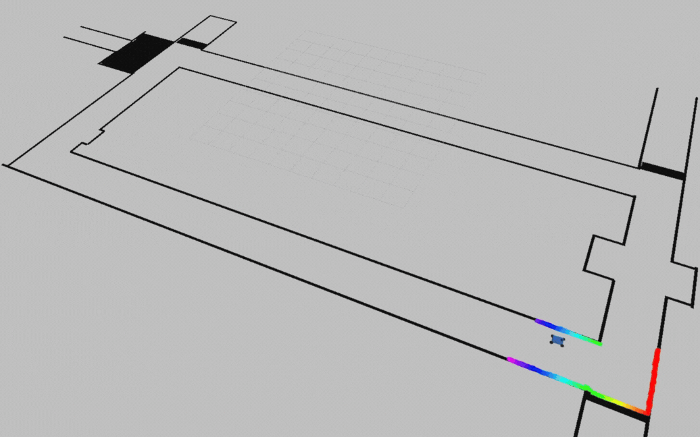
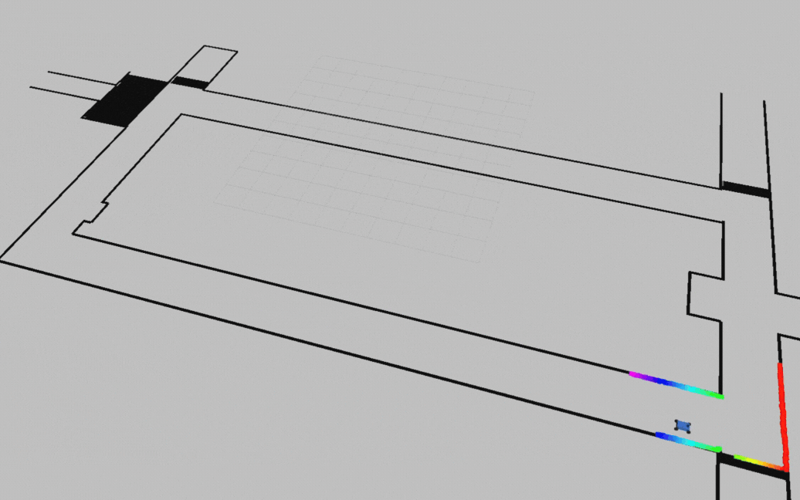
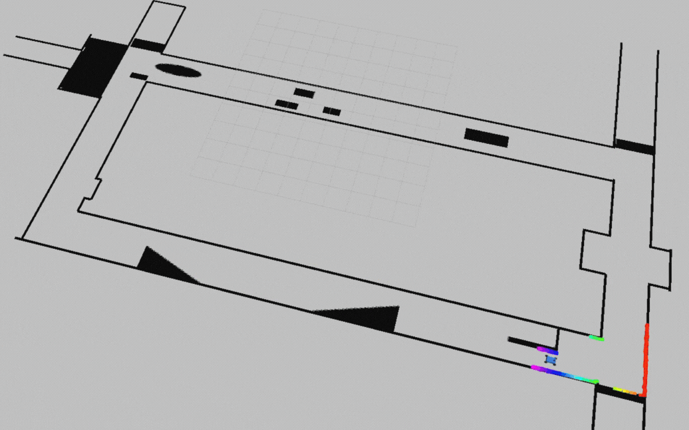
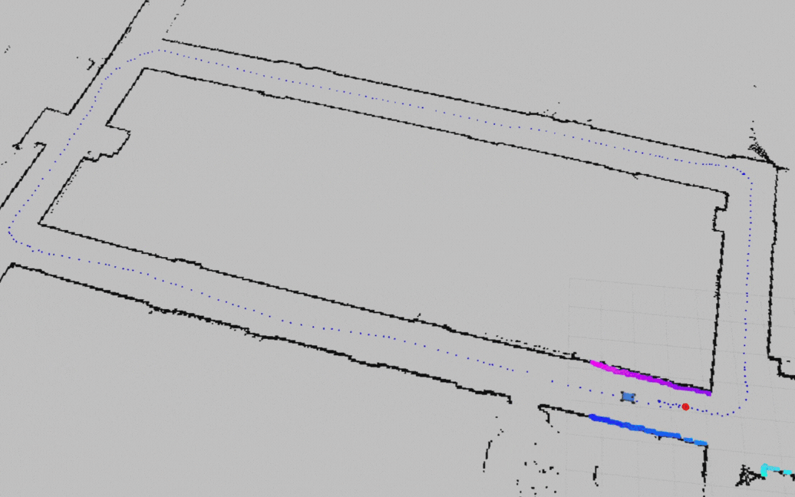
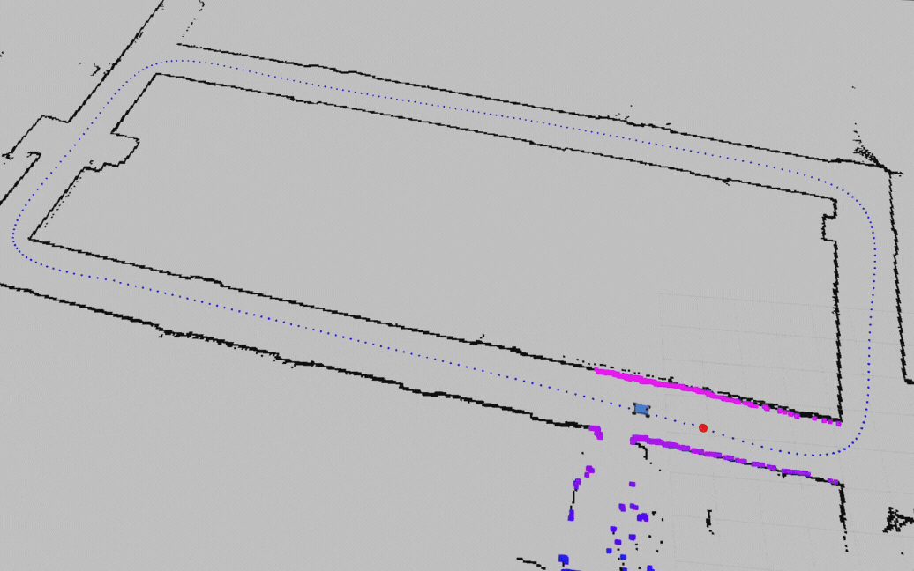

A big shoutout to my incredible teammates — Prakriti Prasad, Shreyas Muthusamy, and Shubhodeep Aditya — who stood by me through an unforgettable semester. From countless sleepless nights of debugging to all the shared moments of frustration and small wins, I’ve learned so much from each of you.
This is a compilation of the methods that we have developed for our F1/10 cars for the labs and races in the course ESE 6150 - Autonomous Racing Cars @ University of Pennsylvania.
Please note that all animations in this article are displayed at 2x speed.
Table of Contents
1. Reactive Methods
Reactive methods are control strategies that utilize real-time sensor data to generate immediate responses without relying on complex planning or mapping, making them effective when the agent lacks prior knowledge about the surrounding environment. However, these approaches are quite sensitive to noise and uncertainty, have limited adaptability to complex scenarios, and often yield suboptimal behaviors.
Wall-following
The very first algorithm we employed was PID wall-following. Its principle is straightforward: the robot navigates along the wall while maintaining a fixed distance. The PID controller adjusts the steering angle to keep the distance between the agent and the wall constant.

This algorithm has a relatively simple implementation; however, it demands extensive time for tuning the PID gains. Moreover, it is inefficient in handling environmental irregularities — for example, it struggles with sharp turns and indentations. Finally, achieving high velocities is almost impossible, as evidenced by significant wobbling even at a low speed, which would be exacerbated at higher speeds.
Gap-following
By identifying the nearest obstacles or sharp disparities in the LIDAR data and masking out an area corresponding to the agent’s size, the gap-following algorithm defines “gaps” (open spaces) for navigation. The agent then moves toward the gap that is widest or extends the farthest.


Apparently, this algorithm allows for much smoother motion and higher speeds than wall-following. Additionally, thanks to its smooth and stable motion, the robot can more easily avoid obstacles while navigating an unknown environment (at a conservative speed). However, it still exhibits the inherent limitation of reactive methods, namely that the generated trajectories are likely to be suboptimal
2. Planning-based Methods
Reactive strategies are effective in well-structured and predictable environments but often struggle with local minima and unexpected oscillatory behavior. However, in racing, where even a few milliseconds can make a huge difference, optimal and efficient navigation is essential. Planning-based methods address this need by leveraging available environmental information (e.g., maps, constraints) or prior experience (e.g., recorded paths), resulting in more stable and (hopefully) near-optimal performance
Pure Pursuit
Given a pre-planned trajectory and the agent’s ability to accurately localize itself in the environment (e.g., via SLAM and a particle filter), the pure pursuit algorithm generates driving commands that target points at a fixed look-ahead distance along the planned path.


Despite its surprising simplicity, this algorithm delivers superior speed and stability compared to reactive approaches. Additionally, developers can easily combine it with other methods to optimize the input trajectory or speed management, further improving lap times.
The project is currently in progress and will be updated in the near future.
If you have any questions or are interested in the project, please
contact me for further information.